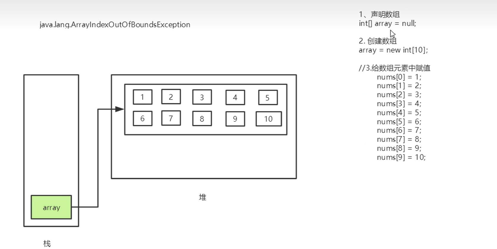

Java-内存分析Feb 13, 2023内存分析12345678910graph LRA1[Java内存]-->A2[堆]A2-->存放new的对象的数组A2-->可以被所有的线程共享-->不会存放别的对象引用A1-->A3[栈]A3-->存放基本变量类型-->会包含这个基本类型的具体数值A3-->引用对象的变量-->会存放这个引用在堆里面的具体地址A1-->A4[方法区]A4-->也可以被所有的线程共享A4-->包含了所有类和static变量 创建数组1java.lang.ArraylndexOutOfBoundsException //数组下标越界 